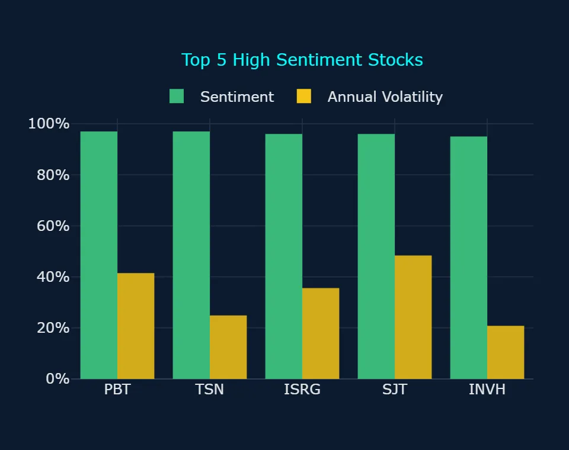
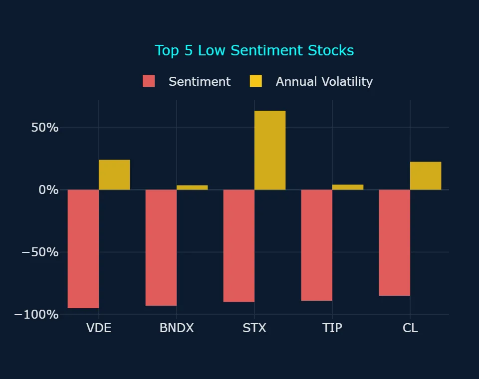
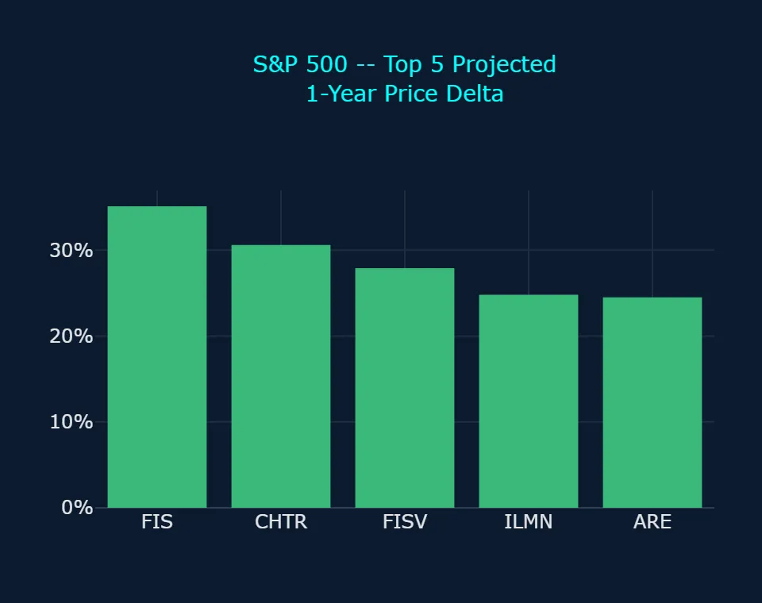
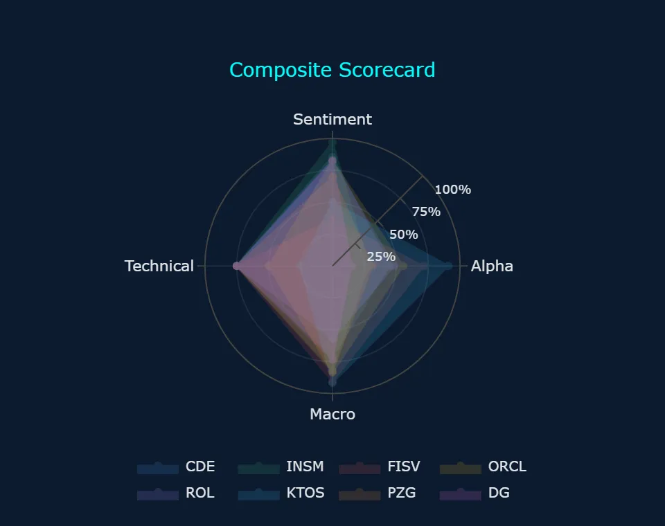
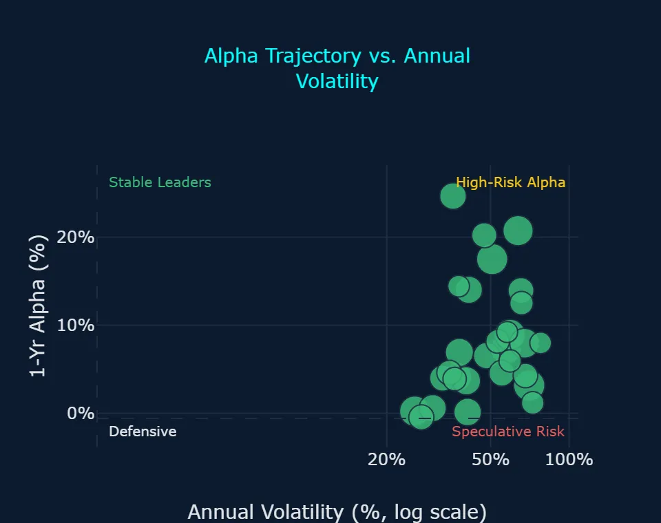
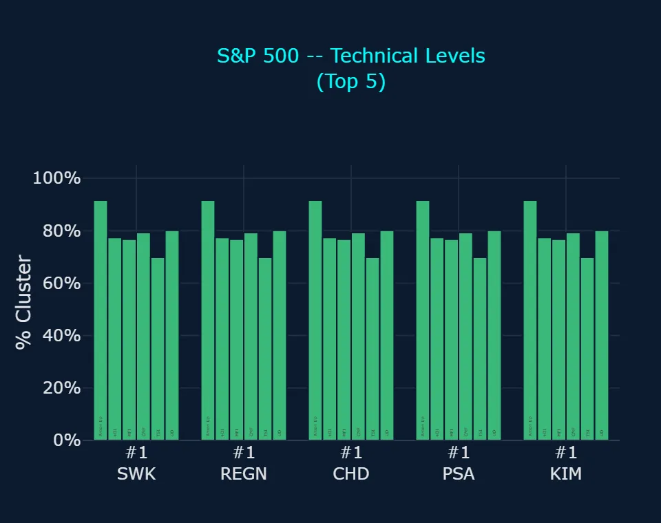
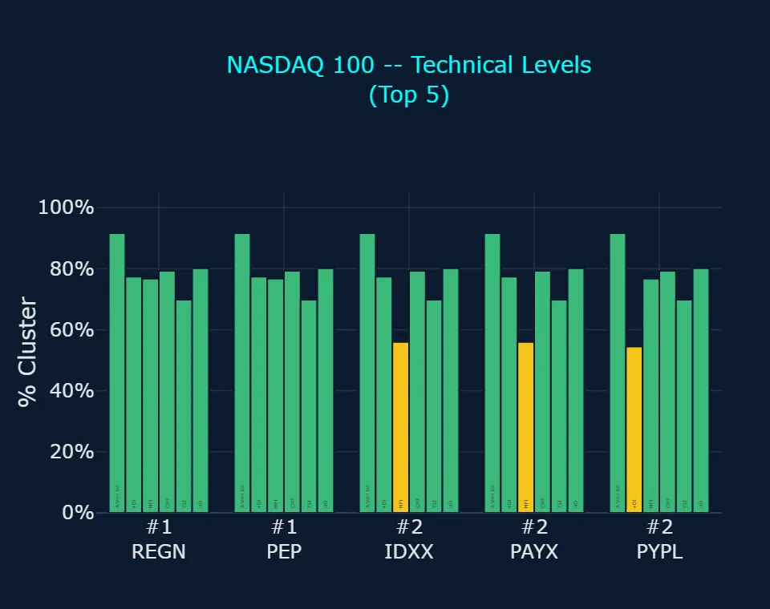
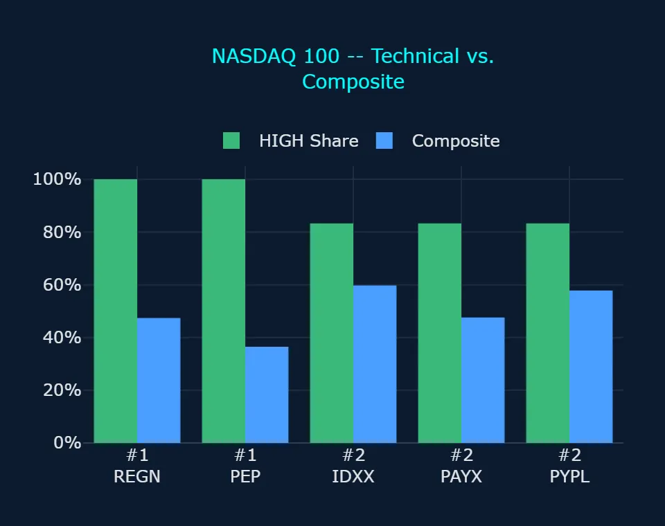

Zoonova AI: Pre-Market Quantitative Briefing – November 5, 2026
Session Quantitative Briefing: The Zoonova AI Intelligence Engine executes a hybrid architecture combining a proprietary Quad-Ensemble machine learning framework with Google Gemini Flash for real-time contextual synthesis and semantic macroeconomic grounding. The quantitative pipeline integrates four specialized estimators: Random Forest Regressor (RFR) for baseline structural stability, eXtreme Gradient Boosting (XGB) optimized for residual loss minimization, Categorical Boosting (CAT) for high-cardinality categorical signal processing, and Temporal Fusion Transformer (TFT) for multi-horizon price and volatility forecasting.
Zoonova AI: Pre-Market Momentum & Liquidity Report
1. QUANTITATIVE MODEL OVERVIEW & SIGNAL METRICS
Zoonova AI Command Center deploys a Quad-Ensemble predictive framework combining Random Forest Regressor [RFR], eXtreme Gradient Boosting [XGB], Categorical Boosting [CAT], and Temporal Fusion Transformer [TFT] to generate multi-horizon price targets and alpha probability distributions. Market sentiment is quantified via VADER sentiment scoring across real-time news and corporate filings, while BIRCH clustering detects structural anomaly patterns and systemic regime shifts across the multi-asset universe.
- SPDR S&P 500 ETF Trust (SPY) closed at $766.81 on 2026-11-04 with neutral sentiment of 0.0% and annualized volatility of 16.58%, with Quad-Ensemble projections indicating a 1-year target of $846.89 for an implied gain of +10.4% (Zoonova, 2026-11-04).
- Invesco QQQ Trust Series 1 (QQQ) closed at $691.95 on 2026-11-04 with neutral sentiment of 0.0% and annualized volatility of 22.04%, carrying a 1-year target of $747.57 (+8.0%) and projected 1-year benchmark-relative alpha of -2.40% (Zoonova, 2026-11-04).
- SPDR Dow Jones Industrial Average ETF (DIA) closed at $533.11 with neutral sentiment of 0.0% and annualized volatility of 15.12%, with models targeting $572.61 (+7.4%) over one year and registering a 3-day bullish short-term trend anomaly (Zoonova, 2026-11-04).
- Vanguard Total Bond Market ETF (BND) closed at $71.50 with positive sentiment of +30.0% and annualized volatility of 4.46%, projecting a 1-year target of $76.83 (+7.5%), while SPDR Gold Shares ETF (GLD) closed at $372.49 with positive sentiment of +57.0% and a 1-year target of $394.73 (+6.0%) supported by a 3-day bullish trend anomaly (Zoonova, 2026-11-04).
- Mega-cap technology constituents Amazon.com Inc. (AMZN) and Alphabet Inc. (GOOGL) registered positive sentiment of +65.0% on 2026-11-04, with 1-year projected prices of $288.24 and $316.16, respectively, though both carry negative 1-year alpha projections of -2.09% and -1.02% (Zoonova, 2026-11-04).
2. SENTIMENT INSIGHTS – TOP 5 HIGH & LOW
Top 5 High Sentiment Stocks
| Ticker | Company Name | Sentiment Score | Primary Catalyst / Driver |
|---|---|---|---|
| PBT | Permian Basin Royalty Trust | +97.0% | Permian Basin Royalty Trust declared an increased monthly cash distribution of $0.045191 per unit after receiving a final settlement payment from Blackbeard Operating (Permian Basin Royalty Trust, 2026-10-20). |
| TSN | Tyson Foods, Inc. | +97.0% | Tyson Foods shares attracted strong buying interest as the stock broke above key technical moving averages ahead of its scheduled fourth-quarter earnings release on 2026-11-16 (GuruFocus, 2026-11-04). |
| ISRG | Intuitive Surgical Inc | +96.0% | Intuitive Surgical surged over 5% on elevated trading volume as robust double-digit procedure growth across da Vinci robotic installations continued to drive market optimism (24/7 Wall St., 2026-11-04). |
| SJT | San Juan Basin Royalty Trust | +96.0% | San Juan Basin Royalty Trust generated speculative retail volume despite the trustee announcing no October cash distribution due to $9.32 million in net cumulative excess production costs (PR Newswire, 2026-10-20). |
| INVH | Invitation Homes Inc | +95.0% | Invitation Homes delivered resilient third-quarter 2026 core FFO of $0.48 per share, raised full-year guidance, and announced a new $500 million share repurchase program (The Motley Fool, 2026-10-30). |
Top 5 Low Sentiment Stocks
| Ticker | Company Name | Sentiment Score | Primary Friction / Risk Factor |
|---|---|---|---|
| VDE* | Vanguard Energy ETF | -95.0% | Vanguard Energy ETF dropped sharply after benchmark crude oil futures plunged more than 8% amid signs of easing geopolitical tensions in the Middle East following U.S. election results (Reuters, 2026-11-04). |
| BNDX* | Vanguard Total International Bond ETF | -93.0% | Vanguard Total International Bond ETF faced persistent selling pressure as multi-decade yield highs across European and developed sovereign debt markets continued to compress international bond prices (JPMorgan, 2026-10-19). |
| STX | Seagate Technology Holdings Plc | -90.0% | Seagate Technology experienced negative sentiment drag despite reporting record fiscal first-quarter profitability as extreme annualized volatility of 63.37% spurred profit-taking across memory and hardware sectors (Seagate Technology, 2026-10-27). |
| TIP* | iShares TIPS Bond ETF | -89.0% | iShares TIPS Bond ETF sentiment weakened as a sharp pullback in headline commodity prices dampened near-term inflation-hedging demand while duration risk continued to impact real yields (24/7 Wall St., 2026-10-22). |
| CL | Colgate-Palmolive Co. | -85.0% | Colgate-Palmolive recorded depressed sentiment after corporate leadership warned of persistent category softness and expected raw material and logistics cost headwinds to peak in the fourth quarter (MarketBeat, 2026-10-30). |
* ETF (exchange-traded fund)
3. ALPHA PROBABILITY & PRICE DELTA LEADERBOARD – 1-YEAR HORIZON
S&P 500 – Top 5 High Alpha Probability (1yr)
| Ticker | Current Price ($) | 1-Yr Target Price ($) | Alpha Probability (%) | Implied Excess Alpha (%) | 10%+ Alpha? |
|---|---|---|---|---|---|
| FISV | $62.05 | $79.39 | 66.09% | 17.50% | Both Yes |
| NKE | $40.49 | $47.52 | 54.62% | 6.91% | Split |
| CPRT | $32.62 | $36.21 | 51.79% | 0.58% | Split |
| ORCL | $123.73 | $147.70 | 51.20% | 8.92% | Split |
| BSX | $45.82 | $52.42 | 49.67% | 3.98% | Both No |
S&P 500 – Top 5 Price Delta + % Change (1yr)
| Ticker | Current Price ($) | 1-Yr Target Price ($) | Absolute Delta ($) | Projected 1-Yr % Change (%) | Implied Excess Alpha (%) |
|---|---|---|---|---|---|
| FIS | $29.76 | $40.21 | $10.45 | 35.11% | 24.66% |
| CHTR | $120.25 | $157.10 | $36.85 | 30.64% | 20.21% |
| FISV | $62.05 | $79.39 | $17.34 | 27.95% | 17.50% |
| ILMN | $226.54 | $282.81 | $56.27 | 24.84% | 14.40% |
| ARE | $46.00 | $57.26 | $11.26 | 24.48% | 14.01% |
NASDAQ 100 – Top 5 High Alpha Probability (1yr)
| Ticker | Current Price ($) | 1-Yr Target Price ($) | Alpha Probability (%) | Implied Excess Alpha (%) | 10%+ Alpha? |
|---|---|---|---|---|---|
| CPRT | $32.62 | $36.21 | 51.79% | 0.58% | Split |
| PYPL | $60.20 | $68.70 | 47.09% | 3.68% | Both No |
| MELI | $1,739.88 | $1,924.01 | 23.89% | 0.14% | Both No |
| NFLX | $66.39 | $76.38 | 21.91% | 4.61% | Both No |
| MRVL | $159.80 | $189.24 | 20.31% | 7.98% | Both No |
NASDAQ 100 – Top 5 Price Delta + % Change (1yr)
| Ticker | Current Price ($) | 1-Yr Target Price ($) | Absolute Delta ($) | Projected 1-Yr % Change (%) | Implied Excess Alpha (%) |
|---|---|---|---|---|---|
| INTC | $58.27 | $70.36 | $12.09 | 20.75% | 10.30% |
| FTNT | $129.39 | $155.23 | $25.84 | 19.97% | 9.53% |
| MRVL | $159.80 | $189.24 | $29.44 | 18.42% | 7.98% |
| QCOM | $173.19 | $201.29 | $28.10 | 16.22% | 5.78% |
| DDOG | $188.72 | $218.79 | $30.07 | 15.93% | 5.49% |
4. REAL-TIME CONTEXTUAL ENRICHMENT
Macro market dynamics on 2026-11-04 reflect pronounced sector divergence driven by energy price deflation and post-election positioning. Benchmark West Texas Intermediate (WTI) crude tumbled over 8% in a single session, triggering swift downside across energy exploration and production assets while simultaneously igniting a relief rally in interest-rate-sensitive equities, industrials, and consumer staples (Reuters, 2026-11-04). This rotation was corroborated by Zoonova ML models, which registered low sentiment of -95.0% for Vanguard Energy ETF (VDE) alongside short-term bearish trend anomalies across prominent operators such as ConocoPhillips (COP), EOG Resources (EOG), and Exxon Mobil Corp. (XOM). Conversely, defensive and consumer-oriented names such as Tyson Foods (TSN) and Invitation Homes (INVH) registered elevated sentiment readings of +97.0% and +95.0%, benefiting from resilient domestic demand and capital return programs (The Motley Fool, 2026-10-30).
Across top alpha probability candidates in the S&P 500, corporate execution and capital restructuring have emerged as dominant differentiators. Fiserv, Inc. (FISV) posted third-quarter adjusted earnings per share of $1.75 on 2026-11-03, affirmed its full-year operational outlook, doubled its Project Elevate cost-reduction target to $1 billion, and committed to $500 million of fourth-quarter share buybacks (Fiserv, 2026-11-03). These developments validate Zoonova's predictive models, where Fiserv leads the S&P 500 with a 66.09% probability of generating 10%+ alpha and an implied 1-year alpha of +17.50% from a previous close of $62.05 to a 1-year target of $79.39, with both models expecting it to beat the benchmark by 10%+ (‘Both Yes’). For other high-probability names, including Nike, Inc. (NKE with 54.62% probability and +6.91% alpha) and Oracle Corp. (ORCL with 51.20% probability and +8.92% alpha), the two models split, as probability models clear the 10%+ threshold while price projection models estimate single-digit outperformance.
Systemic breadth metrics from BIRCH clustering registered 170 anomaly flags across the universe, confirming a tactical regime shift favoring value, domestic services, and medical technology over high-multiple tech. Bullish anomalies total 91 names, comprising 26 stocks at moderate severity and 65 names (57 stocks, 8 ETFs) at low severity, with notable strength in SPDR Dow Jones Industrial Average ETF (DIA) and Intuitive Surgical Inc (ISRG). Conversely, bearish anomalies total 77 names, comprising 30 names (27 stocks, 3 ETFs) at moderate severity and 47 names (43 stocks, 4 ETFs) at low severity. Technology Select Sector SPDR ETF (XLK) registered a 1-week bearish trend anomaly, accompanied by dual 3-day and 1-week bearish anomalies in memory hardware components such as Western Digital Corp. (WDC) and Micron Technology Inc. (MU), signaling that institutional rotation is selectively de-risking high-beta hardware exposure in favor of high Macro Alignment assets.
5. ANOMALY DETECTION SCANNER
Direction: Bearish
Moderate Severity (30 names: 27 stocks, 3 ETFs)
- CAT – Caterpillar Inc.: Bearish Short-Term (3d) Trend Anomaly, Bearish Long-Term (1w) Trend Anomaly
- CMI – Cummins Inc.: Bearish Short-Term (3d) Trend Anomaly, Bearish Long-Term (1w) Trend Anomaly
- CVS – CVS Health Corp: Bearish Short-Term (3d) Trend Anomaly, Bearish Long-Term (1w) Trend Anomaly
- DDOG – Datadog Inc: Bearish Short-Term (3d) Trend Anomaly, Bearish Long-Term (1w) Trend Anomaly
- DVN – Devon Energy Corp.: Bearish Short-Term (3d) Trend Anomaly, Bearish Long-Term (1w) Trend Anomaly
- EFV* – iShares MSCI EAFE Value ETF: Bearish Short-Term (3d) Trend Anomaly, Bearish Long-Term (1w) Trend Anomaly
- ESLT – Elbit Systems Ltd.: Bearish Short-Term (3d) Trend Anomaly, Bearish Long-Term (1w) Trend Anomaly
- ETN – Eaton Corporation plc: Bearish Short-Term (3d) Trend Anomaly, Bearish Long-Term (1w) Trend Anomaly
- GLW – Corning, Inc.: Bearish Short-Term (3d) Trend Anomaly, Bearish Long-Term (1w) Trend Anomaly
- HPE – Hewlett Packard Enterprise Co: Bearish Short-Term (3d) Trend Anomaly, Bearish Long-Term (1w) Trend Anomaly
- JCI – Johnson Controls International plc: Bearish Short-Term (3d) Trend Anomaly, Bearish Long-Term (1w) Trend Anomaly
- KEX – Kirby Corp.: Bearish Short-Term (3d) Trend Anomaly, Bearish Long-Term (1w) Trend Anomaly
- KEYS – Keysight Technologies Inc: Bearish Short-Term (3d) Trend Anomaly, Bearish Long-Term (1w) Trend Anomaly
- KMI – Kinder Morgan Inc: Bearish Short-Term (3d) Trend Anomaly, Bearish Long-Term (1w) Trend Anomaly
- LMT – Lockheed Martin Corp.: Bearish Short-Term (3d) Trend Anomaly, Bearish Long-Term (1w) Trend Anomaly
- MATX – Matson Inc: Bearish Short-Term (3d) Trend Anomaly, Bearish Long-Term (1w) Trend Anomaly
- MPC – Marathon Petroleum Corp: Bearish Short-Term (3d) Trend Anomaly, Bearish Long-Term (1w) Trend Anomaly
- MRVL – Marvell Technology Inc: Bearish Short-Term (3d) Trend Anomaly, Bearish Long-Term (1w) Trend Anomaly
- MTUM* – iShares MSCI USA Momentum Factor ETF: Bearish Short-Term (3d) Trend Anomaly, Bearish Long-Term (1w) Trend Anomaly
- MU – Micron Technology Inc.: Bearish Short-Term (3d) Trend Anomaly, Bearish Long-Term (1w) Trend Anomaly
- NRIX – Nurix Therapeutics Inc: Bearish Short-Term (3d) Trend Anomaly, Bearish Long-Term (1w) Trend Anomaly
- PWR – Quanta Services, Inc.: Bearish Short-Term (3d) Trend Anomaly, Bearish Long-Term (1w) Trend Anomaly
- QUAL* – iShares MSCI USA Quality Factor ETF: Bearish Short-Term (3d) Trend Anomaly, Bearish Long-Term (1w) Trend Anomaly
- STX – Seagate Technology Holdings Plc: Bearish Short-Term (3d) Trend Anomaly, Bearish Long-Term (1w) Trend Anomaly
- TER – Teradyne, Inc.: Bearish Short-Term (3d) Trend Anomaly, Bearish Long-Term (1w) Trend Anomaly
- TRMB – Trimble Inc: Bearish Short-Term (3d) Trend Anomaly, Bearish Long-Term (1w) Trend Anomaly
- URGN – UroGen Pharma Ltd: Bearish Short-Term (3d) Trend Anomaly, Bearish Long-Term (1w) Trend Anomaly
- VLO – Valero Energy Corp.: Bearish Short-Term (3d) Trend Anomaly, Bearish Long-Term (1w) Trend Anomaly
- WDC – Western Digital Corp.: Bearish Short-Term (3d) Trend Anomaly, Bearish Long-Term (1w) Trend Anomaly
- WMB – Williams Cos Inc: Bearish Short-Term (3d) Trend Anomaly, Bearish Long-Term (1w) Trend Anomaly
Low Severity (47 names: 43 stocks, 4 ETFs)
- AKAM – Akamai Technologies Inc: Bearish Long-Term (1w) Trend Anomaly
- AMD – Advanced Micro Devices Inc.: Bearish Long-Term (1w) Trend Anomaly
- AME – Ametek Inc: Bearish Short-Term (3d) Trend Anomaly
- APA – APA Corporation: Bearish Short-Term (3d) Trend Anomaly
- APH – Amphenol Corp.: Bearish Short-Term (3d) Trend Anomaly
- BKR – Baker Hughes Co: Bearish Short-Term (3d) Trend Anomaly
- CNP – Centerpoint Energy Inc.: Bearish Short-Term (3d) Trend Anomaly
- COP – Conoco Phillips: Bearish Short-Term (3d) Trend Anomaly
- CRL – Charles River Laboratories International Inc.: Bearish Short-Term (3d) Trend Anomaly
- CRWD – Crowdstrike Holdings Inc: Bearish Long-Term (1w) Trend Anomaly
- EOG – EOG Resources, Inc.: Bearish Short-Term (3d) Trend Anomaly
- FANG – Diamondback Energy Inc: Bearish Long-Term (1w) Trend Anomaly
- FFIV – F5 Inc: Bearish Long-Term (1w) Trend Anomaly
- FIS – Fidelity National Information Services, Inc.: Bearish Short-Term (3d) Trend Anomaly
- GNRC – Generac Holdings Inc: Bearish Short-Term (3d) Trend Anomaly
- HII – Huntington Ingalls Industries Inc: Bearish Short-Term (3d) Trend Anomaly
- ILMN – Illumina Inc: Bearish Long-Term (1w) Trend Anomaly
- INTC – Intel Corp.: Bearish Long-Term (1w) Trend Anomaly
- KLAC – KLA Corp.: Bearish Short-Term (3d) Trend Anomaly
- KTOS – Kratos Defense & Security Solutions Inc: Bearish Short-Term (3d) Trend Anomaly
- KURA – Kura Oncology Inc: Bearish Short-Term (3d) Trend Anomaly
- LHX – L3Harris Technologies Inc: Bearish Short-Term (3d) Trend Anomaly
- LRCX – Lam Research Corp.: Bearish Long-Term (1w) Trend Anomaly
- NET – Cloudflare Inc: Bearish Long-Term (1w) Trend Anomaly
- NOC – Northrop Grumman Corp.: Bearish Short-Term (3d) Trend Anomaly
- NRG – NRG Energy Inc.: Bearish Short-Term (3d) Trend Anomaly
- NTAP – Netapp Inc: Bearish Long-Term (1w) Trend Anomaly
- OKE – Oneok Inc.: Bearish Long-Term (1w) Trend Anomaly
- OKTA – Okta Inc: Bearish Long-Term (1w) Trend Anomaly
- PANW – Palo Alto Networks Inc: Bearish Long-Term (1w) Trend Anomaly
- PGEN – Precigen Inc: Bearish Long-Term (1w) Trend Anomaly
- PH – Parker-Hannifin Corp.: Bearish Short-Term (3d) Trend Anomaly
- PLTR – Palantir Technologies Inc: Bearish Long-Term (1w) Trend Anomaly
- PRLB – Proto Labs Inc: Bearish Long-Term (1w) Trend Anomaly
- PSX – Phillips 66: Bearish Short-Term (3d) Trend Anomaly
- RTX – RTX Corp: Bearish Short-Term (3d) Trend Anomaly
- SHV* – iShares Short Treasury Bond ETF: Bearish Long-Term (1w) Trend Anomaly
- SNDX – Syndax Pharmaceuticals Inc: Bearish Short-Term (3d) Trend Anomaly
- SNOW – Snowflake Inc: Bearish Long-Term (1w) Trend Anomaly
- SUPN – Supernus Pharmaceuticals Inc: Bearish Long-Term (1w) Trend Anomaly
- TDY – Teledyne Technologies Inc: Bearish Short-Term (3d) Trend Anomaly
- TWLO – Twilio Inc: Bearish Long-Term (1w) Trend Anomaly
- VDE* – Vanguard Energy ETF: Bearish Short-Term (3d) Trend Anomaly
- XLE* – The Energy Select Sector SPDR Fund: Bearish Short-Term (3d) Trend Anomaly
- XLK* – Technology Select Sector SPDR ETF: Bearish Long-Term (1w) Trend Anomaly
- XOM – Exxon Mobil Corp.: Bearish Short-Term (3d) Trend Anomaly
- ZBRA – Zebra Technologies Corp.: Bearish Long-Term (1w) Trend Anomaly
Direction: Bullish
Moderate Severity (26 stocks)
- ABT – Abbott Laboratories: Bullish Short-Term (3d) Trend Anomaly, Bullish Long-Term (1w) Trend Anomaly
- AJG – Arthur J. Gallagher & Co.: Bullish Short-Term (3d) Trend Anomaly, Bullish Long-Term (1w) Trend Anomaly
- BBIO – BridgeBio Pharma Inc: Bullish Short-Term (3d) Trend Anomaly, Bullish Long-Term (1w) Trend Anomaly
- BKNG – Booking Holdings Inc: Bullish Short-Term (3d) Trend Anomaly, Bullish Long-Term (1w) Trend Anomaly
- CNC – Centene Corp.: Bullish Short-Term (3d) Trend Anomaly, Bullish Long-Term (1w) Trend Anomaly
- D – Dominion Energy Inc: Bullish Short-Term (3d) Trend Anomaly, Bullish Long-Term (1w) Trend Anomaly
- DAL – Delta Air Lines, Inc.: Bullish Short-Term (3d) Trend Anomaly, Bullish Long-Term (1w) Trend Anomaly
- EXPE – Expedia Group Inc: Bullish Short-Term (3d) Trend Anomaly, Bullish Long-Term (1w) Trend Anomaly
- FDX – Fedex Corp: Bullish Short-Term (3d) Trend Anomaly, Bullish Long-Term (1w) Trend Anomaly
- FOXA – Fox Corporation: Bullish Short-Term (3d) Trend Anomaly, Bullish Long-Term (1w) Trend Anomaly
- HCA – HCA Healthcare Inc: Bullish Short-Term (3d) Trend Anomaly, Bullish Long-Term (1w) Trend Anomaly
- JKHY – Jack Henry & Associates, Inc.: Bullish Short-Term (3d) Trend Anomaly, Bullish Long-Term (1w) Trend Anomaly
- MCD – McDonald`s Corp: Bullish Short-Term (3d) Trend Anomaly, Bullish Long-Term (1w) Trend Anomaly
- MRNA – Moderna Inc: Bullish Short-Term (3d) Trend Anomaly, Bullish Long-Term (1w) Trend Anomaly
- PHM – PulteGroup Inc: Bullish Short-Term (3d) Trend Anomaly, Bullish Long-Term (1w) Trend Anomaly
- RCL – Royal Caribbean Group: Bullish Short-Term (3d) Trend Anomaly, Bullish Long-Term (1w) Trend Anomaly
- ROST – Ross Stores, Inc.: Bullish Short-Term (3d) Trend Anomaly, Bullish Long-Term (1w) Trend Anomaly
- RVMD – Revolution Medicines Inc: Bullish Short-Term (3d) Trend Anomaly, Bullish Long-Term (1w) Trend Anomaly
- RYTM – Rhythm Pharmaceuticals Inc.: Bullish Short-Term (3d) Trend Anomaly, Bullish Long-Term (1w) Trend Anomaly
- SHW – Sherwin-Williams Co.: Bullish Short-Term (3d) Trend Anomaly, Bullish Long-Term (1w) Trend Anomaly
- SWK – Stanley Black & Decker Inc: Bullish Short-Term (3d) Trend Anomaly, Bullish Long-Term (1w) Trend Anomaly
- SYK – Stryker Corp.: Bullish Short-Term (3d) Trend Anomaly, Bullish Long-Term (1w) Trend Anomaly
- UHS – Universal Health Services, Inc.: Bullish Short-Term (3d) Trend Anomaly, Bullish Long-Term (1w) Trend Anomaly
- WMT – Walmart Inc: Bullish Short-Term (3d) Trend Anomaly, Bullish Long-Term (1w) Trend Anomaly
- XNCR – Xencor Inc: Bullish Short-Term (3d) Trend Anomaly, Bullish Long-Term (1w) Trend Anomaly
- ZBH – Zimmer Biomet Holdings Inc: Bullish Short-Term (3d) Trend Anomaly, Bullish Long-Term (1w) Trend Anomaly
Low Severity (65 names: 57 stocks, 8 ETFs)
- AMP – Ameriprise Financial Inc: Bullish Short-Term (3d) Trend Anomaly
- AMZN – Amazon.com Inc.: Bullish Short-Term (3d) Trend Anomaly
- ANET – Arista Networks Inc: Bullish Short-Term (3d) Trend Anomaly
- BALL – Ball Corp.: Bullish Short-Term (3d) Trend Anomaly
- BBY – Best Buy Co. Inc.: Bullish Short-Term (3d) Trend Anomaly
- BDX – Becton Dickinson & Co.: Bullish Short-Term (3d) Trend Anomaly
- BEN – Franklin Resources, Inc.: Bullish Short-Term (3d) Trend Anomaly
- BRKR – Bruker Corp: Bullish Short-Term (3d) Trend Anomaly
- CBRE – CBRE Group Inc: Bullish Long-Term (1w) Trend Anomaly
- CCL – Carnival Corp.: Bullish Short-Term (3d) Trend Anomaly
- CDE – Coeur Mining Inc: Bullish Short-Term (3d) Trend Anomaly
- CDW – CDW Corp: Bullish Short-Term (3d) Trend Anomaly
- DD – DuPont de Nemours Inc: Bullish Long-Term (1w) Trend Anomaly
- DG – Dollar General Corp.: Bullish Short-Term (3d) Trend Anomaly
- DHI – D.R. Horton Inc.: Bullish Short-Term (3d) Trend Anomaly
- DIA* – SPDR Dow Jones Industrial Average ETF: Bullish Short-Term (3d) Trend Anomaly
- DLTR – Dollar Tree Inc: Bullish Short-Term (3d) Trend Anomaly
- DVA – DaVita Inc: Bullish Short-Term (3d) Trend Anomaly
- EFA* – iShares MSCI EAFE ETF: Bullish Short-Term (3d) Trend Anomaly
- FISV – Fiserv, Inc.: Bullish Long-Term (1w) Trend Anomaly
- FOX – Fox Corporation: Bullish Long-Term (1w) Trend Anomaly
- GDX* – VanEck Gold Miners ETF: Bullish Short-Term (3d) Trend Anomaly
- GE – GE Aerospace: Bullish Long-Term (1w) Trend Anomaly
- GLD* – SPDR Gold Shares ETF: Bullish Short-Term (3d) Trend Anomaly
- GRMN – Garmin Ltd: Bullish Short-Term (3d) Trend Anomaly
- GS – Goldman Sachs Group, Inc.: Bullish Short-Term (3d) Trend Anomaly
- HD – Home Depot, Inc.: Bullish Short-Term (3d) Trend Anomaly
- HRL – Hormel Foods Corp.: Bullish Short-Term (3d) Trend Anomaly
- HSIC – Henry Schein Inc.: Bullish Short-Term (3d) Trend Anomaly
- IAU* – iShares Gold Trust: Bullish Short-Term (3d) Trend Anomaly
- ICE – Intercontinental Exchange Inc: Bullish Long-Term (1w) Trend Anomaly
- IDXX – Idexx Laboratories, Inc.: Bullish Long-Term (1w) Trend Anomaly
- IEFA* – iShares Core MSCI EAFE ETF: Bullish Short-Term (3d) Trend Anomaly
- INCY – Incyte Corp.: Bullish Short-Term (3d) Trend Anomaly
- INSM – Insmed Inc: Bullish Short-Term (3d) Trend Anomaly
- ISRG – Intuitive Surgical Inc: Bullish Short-Term (3d) Trend Anomaly
- JPM – JPMorgan Chase & Co.: Bullish Short-Term (3d) Trend Anomaly
- LOW – Lowe`s Cos., Inc.: Bullish Short-Term (3d) Trend Anomaly
- LUV – Southwest Airlines Co: Bullish Short-Term (3d) Trend Anomaly
- MNST – Monster Beverage Corp.: Bullish Short-Term (3d) Trend Anomaly
- MRK – Merck & Co Inc: Bullish Short-Term (3d) Trend Anomaly
- MS – Morgan Stanley: Bullish Short-Term (3d) Trend Anomaly
- NBIX – Neurocrine Biosciences, Inc.: Bullish Long-Term (1w) Trend Anomaly
- NEE – NextEra Energy Inc: Bullish Short-Term (3d) Trend Anomaly
- NEM – Newmont Corp: Bullish Short-Term (3d) Trend Anomaly
- OMC – Omnicom Group, Inc.: Bullish Short-Term (3d) Trend Anomaly
- OVID – Ovid Therapeutics Inc: Bullish Short-Term (3d) Trend Anomaly
- PZG – Paramount Gold Nevada Corp: Bullish Short-Term (3d) Trend Anomaly
- RJF – Raymond James Financial, Inc.: Bullish Short-Term (3d) Trend Anomaly
- RMD – Resmed Inc.: Bullish Short-Term (3d) Trend Anomaly
- ROL – Rollins, Inc.: Bullish Long-Term (1w) Trend Anomaly
- ROP – Roper Technologies Inc: Bullish Long-Term (1w) Trend Anomaly
- SPOT – Spotify Technology S.A.: Bullish Long-Term (1w) Trend Anomaly
- STE – Steris Plc: Bullish Short-Term (3d) Trend Anomaly
- TJX – TJX Companies, Inc.: Bullish Short-Term (3d) Trend Anomaly
- TPR – Tapestry Inc: Bullish Long-Term (1w) Trend Anomaly
- TROW – T. Rowe Price Group Inc.: Bullish Short-Term (3d) Trend Anomaly
- TSN – Tyson Foods, Inc.: Bullish Short-Term (3d) Trend Anomaly
- TTWO – Take-Two Interactive Software, Inc.: Bullish Short-Term (3d) Trend Anomaly
- TVTX – Travere Therapeutics Inc: Bullish Short-Term (3d) Trend Anomaly
- UAL – United Airlines Holdings Inc: Bullish Short-Term (3d) Trend Anomaly
- VGK* – Vanguard FTSE Europe ETF: Bullish Short-Term (3d) Trend Anomaly
- VGZ – Vista Gold Corp.: Bullish Short-Term (3d) Trend Anomaly
- VMC – Vulcan Materials Co: Bullish Short-Term (3d) Trend Anomaly
- XLC* – Communication Services Select Sector SPDR Fund: Bullish Short-Term (3d) Trend Anomaly
Direction: Mixed
Moderate Severity (2 stocks)
- HWM – Howmet Aerospace Inc: Bearish Short-Term (3d) Trend Anomaly, Bullish Long-Term (1w) Trend Anomaly
- REGN – Regeneron Pharmaceuticals, Inc.: Bearish Short-Term (3d) Trend Anomaly, Bullish Long-Term (1w) Trend Anomaly
* ETF (exchange-traded fund)
6. STRATEGIC INVESTMENT ASSESSMENT
- In the Main Scorecard, Coeur Mining Inc (CDE) and Insmed Inc (INSM) achieve the highest Composite scores at 67.7, reinforced by technical signals of 75.0, Macro Alignment scores above 70.0, and confirmed 3-day bullish trend anomalies, although both models expect neither stock to beat the benchmark by 10%+ (‘Both No’) (Zoonova, 2026-11-04).
- Fiserv, Inc. (FISV) stands as the highest conviction individual selection in the Main Scorecard, where both models expect it to beat the benchmark by 10%+ (‘Both Yes’), underpinned by a universe-leading 1-year alpha probability of 66.09%, projected 1-year alpha of +17.50%, an Alpha Rating of 71.3, Macro Alignment of 90.6, Composite of 67.4, and a confirmed 1-week bullish trend anomaly (Zoonova, 2026-11-04).
- In the Tech Stock Scorecard, Amazon.com Inc. (AMZN) ranks highest with a Composite of 45.0, Sentiment Rating of 82.5, and Technical Signal of 75.0 with a confirmed 3-day bullish anomaly, but carries an Alpha Rating of only 1.0 where both models agree neither AMZN nor Alphabet Inc. (GOOGL, Composite 43.1) will exceed the 10%+ alpha hurdle over the benchmark (Zoonova, 2026-11-04).
- Risk mitigation mandates reducing hardware technology exposure, as Technology Select Sector SPDR ETF (XLK) registered a 1-week bearish anomaly while 30 names (27 stocks, 3 ETFs) confirmed moderate bearish anomalies, including Western Digital Corp. (WDC, Composite 45.2, Technical Signal 0.0) and Micron Technology Inc. (MU, Composite 38.8, Technical Signal 0.0) (Zoonova, 2026-11-04).
- Capital allocation should overweight high-quality non-correlated equities displaying Macro Alignment metrics above 85.0 and positive technical confirmations, while completely divesting from energy equities and funds such as Vanguard Energy ETF (VDE), where sharp commodity contract contractions and 3-day bearish anomalies indicate continued intermediate-term relative weakness.
7. STOCK SCORECARD
Main Scorecard
| Ticker | Composite (%) | Alpha Rating | 10%+ Alpha? | Projected 1-Yr Change (%) | Street Consensus (Upside) | Next Earnings | Sentiment Rating | Technical Signal | Macro Alignment | Anomaly Flag | Catalyst / Risk | Market Cap | EPS Revisions (30d) | Short Interest / DTC | Options Flow | Earnings Surprise (4Q) | Bias |
|---|---|---|---|---|---|---|---|---|---|---|---|---|---|---|---|---|---|
| CDE | 67.7% | 44.6 | Both No | +13.6% | Buy (+54.9%) | 2027-02-18 | 85.5 | 75.0 | 70.8 | Bullish (3d) | Precious Metals Expansion | $15.0B | Upward (+14.3%) | 4.8% / 2.3 DTC | Bullish (Call Skew) | 3/4 Beats | Bullish |
| INSM | 67.7% | 28.1 | Both No | +17.8% | Strong Buy (+77.1%) | 2027-02-23 | 97.0 | 75.0 | 81.3 | Bullish (3d) | Brinsupri Commercial Launch | $24.1B | Upward (+6.5%) | 5.6% / 4.1 DTC | Bullish (Call Skew) | 3/4 Beats | Bullish |
| FISV | 67.4% | 71.3 | Both Yes | +27.9% | Hold (+0.7%) | 2027-02-09 | 36.5 | 75.0 | 90.6 | Bullish (1w) | Clover Growth Moderation | $33.0B | Downward (-4.2%) | 5.3% / 8.3 DTC | Neutral / Mixed | 3/4 Beats | Bearish |
| ORCL | 66.4% | 55.3 | Split | +19.4% | Buy (+90.3%) | 2026-12-14 (in 39d) | 82.5 | 50.0 | 83.5 | None | Concurrent Debt Offering | $340.0B | Neutral/Flat (0.0%) | 2.1% / 2.4 DTC | Bullish (Call Skew) | 4/4 Beats | Bullish |
| ROL | 65.0% | 48.1 | Both No | +10.7% | Hold (+6.4%) | 2027-02-17 | 82.0 | 75.0 | 56.7 | Bullish (1w) | Organic Growth Deceleration | $16.6B | Downward (-3.8%) | 9.3% / 2.8 DTC | Bearish (Put Heavy) | 2/4 Beats | Bullish |
| KTOS | 64.3% | 90.7 | Both Yes | +31.2% | Buy (+118.7%) | 2027-02-25 | 50.0 | 25.0 | 91.7 | Bearish (3d) | Hypersonics Backlog Expansion | $6.8B | Upward (+5.1%) | 6.2% / 3.4 DTC | Bearish (Put Heavy) | 4/4 Beats | Neutral |
| PZG | 62.1% | 31.2 | Both No | +18.6% | N/A | 2026-11-16 (in 11d) | 70.0 | 75.0 | 82.7 | Bullish (3d) | Grassy Mountain Permitting | $77.4M | N/A (Pre-Revenue) | 0.7% / 2.0 DTC | Neutral / Mixed | N/A (No Coverage) | Neutral |
| DG | 58.6% | 14.7 | Both No | +14.6% | Buy (-2.0%) | 2026-12-03 (in 28d) | 83.0 | 75.0 | 73.4 | Bullish (3d) | Value Retail Footprint | $29.2B | Neutral/Flat (0.0%) | 4.8% / 3.2 DTC | Neutral / Mixed | 3/4 Beats | Neutral |
| PYPL | 57.8% | 50.8 | Both No | +14.1% | Hold (-1.6%) | 2027-02-04 | 62.5 | 50.0 | 72.0 | None | Checkout Growth Slowdown | $50.0B | Downward (-2.4%) | 2.8% / 2.1 DTC | Bullish (Call Skew) | 3/4 Beats | Neutral |
| NKE | 57.5% | 59.0 | Split | +17.4% | Hold (+16.1%) | 2026-12-17 (in 42d) | 45.0 | 50.0 | 80.3 | None | Greater China Weakness | $60.1B | Downward (-8.1%) | 3.2% / 1.8 DTC | Neutral / Mixed | 4/4 Beats | Neutral |
| MELI | 54.9% | 25.8 | Both No | +10.6% | Strong Buy (+30.1%) | 2027-02-24 | 94.0 | 50.0 | 55.9 | None | Margin Compression Squeeze | $76.5B | Downward (-5.2%) | 2.1% / 1.9 DTC | Bullish (Call Skew) | 1/4 Beats | Neutral |
| ARE | 54.1% | 39.6 | Split | +24.5% | Hold (+8.2%) | 2027-02-01 | 47.5 | 50.0 | 89.5 | None | Life Science Vacancy | $7.4B | Downward (-4.6%) | 4.2% / 3.1 DTC | Neutral / Mixed | 2/4 Beats | Neutral |
| CPRT | 53.5% | 55.9 | Split | +11.0% | Buy (+12.3%) | 2026-11-19 (in 14d) | 50.0 | 50.0 | 58.5 | None | Salvage Volume Normalization | $30.0B | Downward (-3.1%) | 2.3% / 2.7 DTC | Neutral / Mixed | 3/4 Beats | Neutral |
| FIS | 52.4% | 35.1 | Split | +35.1% | Hold (+41.1%) | 2027-02-23 | 69.0 | 25.0 | 92.0 | Bearish (3d) | Guidance Cut Headwinds | $15.3B | Downward (-6.2%) | 3.7% / 3.0 DTC | Neutral / Mixed | 4/4 Beats | Neutral |
| BSX | 50.2% | 53.6 | Both No | +14.4% | Buy (+8.2%) | 2027-02-03 | 28.0 | 50.0 | 72.9 | None | Pipeline Collaboration Deal | $66.4B | Downward (-2.9%) | 2.2% / 2.5 DTC | Bearish (Put Heavy) | 4/4 Beats | Bearish |
| CHTR | 47.3% | 27.3 | Split | +30.6% | Hold (+42.2%) | 2026-11-06 (in 1d) | 33.0 | 50.0 | 91.6 | None | Broadband Competition Pressures | $19.7B | Downward (-4.8%) | 8.5% / 4.7 DTC | Bearish (Put Heavy) | 2/4 Beats | Bearish |
| WDC | 45.2% | 29.6 | Both No | +14.7% | Buy (+82.5%) | 2027-02-04 | 86.0 | 0.0 | 74.1 | Bearish (3d/1w) | Cloud Storage Demand | $100.8B | Upward (+12.4%) | 3.1% / 2.2 DTC | Bearish (Put Heavy) | 4/4 Beats | Neutral |
| KURA | 41.5% | 34.4 | Split | +23.0% | Strong Buy (+318.5%) | 2026-11-10 (in 5d) | 29.0 | 25.0 | 88.5 | Bearish (3d) | Ziftomenib Clinical Data | $677.0M | Neutral/Flat (0.0%) | 9.4% / 5.1 DTC | Neutral / Mixed | 2/4 Beats | Bearish |
| MU | 38.8% | 17.3 | Both No | +11.6% | Strong Buy (+96.4%) | 2026-12-23 | 86.0 | 0.0 | 60.6 | Bearish (3d/1w) | Memory Demand Surge | $967.5B | Upward (+18.2%) | 2.0% / 1.4 DTC | Bullish (Call Skew) | 4/4 Beats | Bearish |
| EFV* | 35.3% | 32.0 | Split | +24.8% | N/A (ETF) | N/A (ETF) | 31.0 | 0.0 | 89.7 | Bearish (3d/1w) | Global Value Rotation | $30.2B | N/A (ETF) | 1.2% / 1.5 DTC | Neutral / Mixed | N/A (ETF) | Bearish |
* ETF (exchange-traded fund)
10%+ Alpha? – whether Zoonova's two 1-year models (alpha probability and price target) expect the stock to beat the benchmark by 10%+. “Both No” is common: 10% is a high bar.
Tech Stock Scorecard
| Ticker | Composite (%) | Alpha Rating | 10%+ Alpha? | Projected 1-Yr Change (%) | Street Consensus (Upside) | Next Earnings | Sentiment Rating | Technical Signal | Macro Alignment | Anomaly Flag | Catalyst / Risk | Market Cap | EPS Revisions (30d) | Short Interest / DTC | Options Flow | Earnings Surprise (4Q) | Bias |
|---|---|---|---|---|---|---|---|---|---|---|---|---|---|---|---|---|---|
| AMZN | 45.0% | 1.0 | Both No | +8.3% | Buy (+24.0%) | 2027-02-04 | 82.5 | 75.0 | 26.7 | Bullish (3d) | Cloud Growth Acceleration | $2.66T | Upward (+7.1%) | 1.2% / 1.6 DTC | Bullish (Call Skew) | 4/4 Beats | Neutral |
| GOOGL | 43.1% | 6.1 | Both No | +9.4% | Buy (+38.6%) | 2027-02-02 | 82.5 | 50.0 | 40.5 | None | Midterm Regulatory Concerns | $3.41T | Downward (-2.8%) | 1.3% / 1.4 DTC | Bullish (Call Skew) | 3/4 Beats | Neutral |
| INTC | 36.9% | 3.9 | Split | +20.7% | Hold (+59.1%) | 2027-01-28 | 50.0 | 25.0 | 84.9 | Bearish (1w) | Executive Share Purchases | $288.0B | Downward (-10.5%) | 3.8% / 2.2 DTC | Bullish (Call Skew) | 2/4 Beats | Bearish |
| META | 36.8% | 7.7 | Both No | +9.9% | Buy (+32.2%) | 2027-02-03 | 50.0 | 50.0 | 47.5 | None | Multi Tranche Bond Sale | $1.59T | Downward (-4.5%) | 1.1% / 1.8 DTC | Bullish (Call Skew) | 4/4 Beats | Bearish |
| TSLA | 36.4% | 1.1 | Both No | +8.4% | Buy (+7.6%) | 2027-02-03 | 72.0 | 50.0 | 27.9 | None | Post Election Rebound | $1.60T | Neutral/Flat (0.0%) | 1.9% / 1.7 DTC | Bullish (Call Skew) | 3/4 Beats | Bearish |
| AVGO | 36.1% | 6.7 | Both No | +9.7% | Buy (+63.0%) | 2026-12-10 (in 35d) | 50.0 | 50.0 | 45.7 | None | Semiconductor Infrastructure Demand | $1.44T | Upward (+6.8%) | 1.6% / 2.0 DTC | Bearish (Put Heavy) | 4/4 Beats | Bearish |
| AMD | 32.8% | 4.4 | Both No | +12.1% | Buy (+26.6%) | 2027-02-02 | 50.0 | 25.0 | 63.4 | Bearish (1w) | Data Center Revenue Surge | $785.0B | Upward (+8.4%) | 2.4% / 1.9 DTC | Bullish (Call Skew) | 4/4 Beats | Bearish |
| AAPL | 27.3% | 1.0 | Both No | +6.8% | Buy (-1.9%) | 2027-01-28 | 50.0 | 50.0 | 10.1 | None | Bond Offering Launch | $5.00T | Upward (+3.2%) | 1.1% / 1.7 DTC | Neutral / Mixed | 4/4 Beats | Bearish |
| NVDA | 25.6% | 1.2 | Both No | +7.8% | Strong Buy (+63.5%) | 2026-11-17 (in 12d) | 35.0 | 50.0 | 19.9 | None | Post Midterm AI Regulation | $4.39T | Upward (+15.6%) | 1.4% / 1.2 DTC | Bearish (Put Heavy) | 4/4 Beats | Bearish |
| MSFT | 23.4% | 0.4 | Both No | +6.6% | Buy (+11.6%) | 2027-01-26 | 36.5 | 50.0 | 8.3 | None | Data Center Expansion Pause | $4.01T | Upward (+4.8%) | 0.9% / 1.5 DTC | Bullish (Call Skew) | 4/4 Beats | Bearish |
| SPCX | N/H | N/H | N/A | N/A | Buy | 2027-02-25 | N/H | N/H | N/H | None | Starlink Mobile Expansion | $1.67T | N/A (Recent IPO) | 2.8% / 1.5 DTC | Neutral / Mixed | 4/4 Beats (+161.4% avg) | N/A |
N/H: no ML scores yet (insufficient trading history for the models).
Search-grounded columns (Street Consensus (Upside), Next Earnings, Catalyst / Risk, Market Cap, EPS Revisions (30d), Short Interest / DTC, Options Flow, Earnings Surprise (4Q)): MarketBeat, StockAnalysis, Investing.com, Seeking Alpha, Robinhood, Benzinga (sources dated 2026-11-05).






Educational purposes only. Not investment advice.
Zoonova AI: Pre-Market Technical Analysis Report
Bullish indicator clusters lead S&P 500 and NASDAQ 100 breadth, but widespread macro divergence limits broader confirmation.
1. 6 CORE INDICATORS
Indicator levels (LOW / MEDIUM / HIGH) and % Cluster come from Zoonova's BIRCH model (Balanced Iterative Reducing and Clustering using Hierarchies), an unsupervised machine-learning clustering model used for pattern recognition. Each indicator is clustered across the stock universe; % Cluster is the centroid of the cluster a stock falls in.
| Indicator | Category | Role |
|---|---|---|
| ARUPAroon Up | Trend Direction | Recency of the highest high in the lookback window; collapses in bear markets, so HIGH means price keeps printing fresh swing highs. |
| +DIPositive Directional Indicator | Trend Direction | Upward directional movement relative to true range; unlike ADX it collapses in sell-offs, so HIGH confirms buyer-driven expansion. |
| MFIMoney Flow Index | Volume / Inflow | Volume-weighted RSI from 0 to 100; falls as money leaves on down days, so HIGH means inflow on up days outweighs outflow. |
| CMFChaikin Money Flow | Volume / Inflow | Close location within the bar weighted by volume; plunges negative in liquidation, so HIGH confirms sustained buying into the top of daily ranges. |
| TSITrue Strength Index | Momentum | Double-smoothed momentum from -100 to +100; deeply negative in downtrends, so HIGH shows consistent multi-period upward thrust. |
| UOUltimate Oscillator | Momentum | Buying pressure across 7-, 14- and 28-period windows from 0 to 100; sinks when closes sit near the lows, so HIGH means buyers are in control on every timeframe. |
2. TECHNICAL REGIME
| Index | Universe | All HIGH (6/6) | Avg HIGH | Aroon Up HIGH | +DI HIGH | MFI HIGH | CMF HIGH | TSI HIGH | UO HIGH |
|---|---|---|---|---|---|---|---|---|---|
| S&P 500 | 424 | 32 | 2.7/6 | 353 | 88 | 97 | 166 | 246 | 213 |
| NASDAQ 100 | 71 | 2 | 2.0/6 | 44 | 13 | 5 | 18 | 32 | 28 |
Across the S&P 500, 32 of 424 constituents are stocks with all indicators HIGH, delivering an average HIGH count of 2.7 led by Aroon Up at 353 and TSI at 246. In contrast, the NASDAQ 100 exhibits narrower participation with only 2 of 71 stocks with all indicators HIGH and an average HIGH count of 2.0, showing minimal volume support with MFI at 5.
3. TOP 5 BULLISH CONFLUENCE
Ranking: Rank = HIGH count (#1 = 6/6, #2 = 5/6, ...); within a rank, Sentiment (desc), then ticker. Sentiment only orders tickers within a rank; it is not a technical signal.
S&P 500 – Top 5 Bullish Confluence
| Rank | Ticker | Aroon Up | +DI | MFI | CMF | TSI | UO | HIGH | Sentiment |
|---|---|---|---|---|---|---|---|---|---|
| 1 | SWK | HIGH 91.6% | HIGH 77.4% | HIGH 76.7% | HIGH 79.3% | HIGH 69.8% | HIGH 80.1% | 6/6 | +90.0% |
| 1 | REGN | HIGH 91.6% | HIGH 77.4% | HIGH 76.7% | HIGH 79.3% | HIGH 69.8% | HIGH 80.1% | 6/6 | +89.0% |
| 1 | CHD | HIGH 91.6% | HIGH 77.4% | HIGH 76.7% | HIGH 79.3% | HIGH 69.8% | HIGH 80.1% | 6/6 | +88.0% |
| 1 | PSA | HIGH 91.6% | HIGH 77.4% | HIGH 76.7% | HIGH 79.3% | HIGH 69.8% | HIGH 80.1% | 6/6 | +78.0% |
| 1 | KIM | HIGH 91.6% | HIGH 77.4% | HIGH 76.7% | HIGH 79.3% | HIGH 69.8% | HIGH 80.1% | 6/6 | +72.0% |
S&P 500 – Signal Groups
| Rank | Ticker | Trend Direction | Volume / Inflow | Momentum |
|---|---|---|---|---|
| 1 | SWK | 2 of 2 HIGH | 2 of 2 HIGH | 2 of 2 HIGH |
| 1 | REGN | 2 of 2 HIGH | 2 of 2 HIGH | 2 of 2 HIGH |
| 1 | CHD | 2 of 2 HIGH | 2 of 2 HIGH | 2 of 2 HIGH |
| 1 | PSA | 2 of 2 HIGH | 2 of 2 HIGH | 2 of 2 HIGH |
| 1 | KIM | 2 of 2 HIGH | 2 of 2 HIGH | 2 of 2 HIGH |
NASDAQ 100 – Top 5 Bullish Confluence
| Rank | Ticker | Aroon Up | +DI | MFI | CMF | TSI | UO | HIGH | Sentiment |
|---|---|---|---|---|---|---|---|---|---|
| 1 | REGN | HIGH 91.6% | HIGH 77.4% | HIGH 76.7% | HIGH 79.3% | HIGH 69.8% | HIGH 80.1% | 6/6 | +89.0% |
| 1 | PEP | HIGH 91.6% | HIGH 77.4% | HIGH 76.7% | HIGH 79.3% | HIGH 69.8% | HIGH 80.1% | 6/6 | +49.0% |
| 2 | IDXX | HIGH 91.6% | HIGH 77.4% | MEDIUM 56.0% | HIGH 79.3% | HIGH 69.8% | HIGH 80.1% | 5/6 | +89.0% |
| 2 | PAYX | HIGH 91.6% | HIGH 77.4% | MEDIUM 56.0% | HIGH 79.3% | HIGH 69.8% | HIGH 80.1% | 5/6 | +81.0% |
| 2 | PYPL | HIGH 91.6% | MEDIUM 54.5% | HIGH 76.7% | HIGH 79.3% | HIGH 69.8% | HIGH 80.1% | 5/6 | +25.0% |
NASDAQ 100 – Signal Groups
| Rank | Ticker | Trend Direction | Volume / Inflow | Momentum |
|---|---|---|---|---|
| 1 | REGN | 2 of 2 HIGH | 2 of 2 HIGH | 2 of 2 HIGH |
| 1 | PEP | 2 of 2 HIGH | 2 of 2 HIGH | 2 of 2 HIGH |
| 2 | IDXX | 2 of 2 HIGH | 1 of 2 HIGH | 2 of 2 HIGH |
| 2 | PAYX | 2 of 2 HIGH | 1 of 2 HIGH | 2 of 2 HIGH |
| 2 | PYPL | 1 of 2 HIGH | 2 of 2 HIGH | 2 of 2 HIGH |
4. TICKER READS
S&P 500
- #1 SWK – 6 of 6 indicators at HIGH, with broad alignment across Trend Direction (2 of 2 HIGH), Volume / Inflow (2 of 2 HIGH), and Momentum (2 of 2 HIGH). Upward price expansion is supported by Aroon Up and +DI in the top cluster alongside sustained accumulation across MFI and CMF. Scorecard Composite of 65.7 supports the Confirmed verdict alongside a Technical Signal of 100.0. Watch: a drop in MFI or CMF out of HIGH to signal easing volume thrust.
- #1 REGN – 6 of 6 indicators at HIGH, featuring synchronized strength across Trend Direction (2 of 2 HIGH), Volume / Inflow (2 of 2 HIGH), and Momentum (2 of 2 HIGH). Despite unanimous top-cluster readings in TSI, UO, and directional gauges, Scorecard Composite of 47.4 yields a Mixed verdict. The neutral Technical Signal of 50.0 reflects offsetting short-term bearish and long-term bullish anomalies. Watch: short-term selling pressure to resolve or pull TSI out of HIGH.
- #1 CHD – 6 of 6 indicators at HIGH, exhibiting full representation in the top cluster across Trend Direction, Volume / Inflow, and Momentum. Unanimous HIGH levels across Aroon Up, CMF, and TSI contrast with a Scorecard Composite of 39.2, establishing a Divergent verdict. The low Composite is primarily burdened by a Macro Alignment of 15.5 and Alpha Rating of 0.3. Watch: softening CMF or TSI to align technicals with weak macro profile.
- #1 PSA – 6 of 6 indicators at HIGH, showing unanimous top-cluster status across Trend Direction, Volume / Inflow, and Momentum indicators. While Aroon Up, +DI, MFI, and UO demonstrate unbroken technical accumulation, the Scorecard Composite of 35.6 triggers a Divergent verdict. Weakness stems from a Macro Alignment of 3.8 and an Alpha Rating of 0.3 despite a Sentiment Rating of 89.0. Watch: a breakdown in +DI or MFI out of HIGH to confirm macro drag.
- #1 KIM – 6 of 6 indicators at HIGH, securing maximum readings across Trend Direction, Volume / Inflow, and Momentum. Broad accumulation in CMF and directional strength in Aroon Up and +DI conflict with a Scorecard Composite of 41.2, resulting in a Divergent verdict. A subdued Macro Alignment of 32.0 and Alpha Rating of 2.8 temper the strong technical backdrop. Watch: CMF or UO falling below HIGH to signal waning institutional inflow.
NASDAQ 100
- #1 REGN – 6 of 6 indicators at HIGH, featuring synchronized strength across Trend Direction (2 of 2 HIGH), Volume / Inflow (2 of 2 HIGH), and Momentum (2 of 2 HIGH). Despite unanimous top-cluster readings in TSI, UO, and directional gauges, Scorecard Composite of 47.4 yields a Mixed verdict. The neutral Technical Signal of 50.0 reflects offsetting short-term bearish and long-term bullish anomalies. Watch: short-term selling pressure to resolve or pull TSI out of HIGH.
- #1 PEP – 6 of 6 indicators at HIGH, displaying top-cluster placement across Trend Direction, Volume / Inflow, and Momentum. Strong momentum from TSI and UO combined with steady inflow in MFI and CMF stand in contrast to a Scorecard Composite of 36.5, marking a Divergent verdict. Subdued Macro Alignment of 26.2 and Alpha Rating of 0.4 account for the model discrepancy. Watch: TSI or CMF dropping out of HIGH to validate composite caution.
- #2 IDXX – 5 of 6 indicators at HIGH, driven by 2 of 2 HIGH in Trend Direction and Momentum alongside 1 of 2 HIGH in Volume / Inflow. Aroon Up, +DI, TSI, and UO occupy top clusters, while MFI rests at MEDIUM. Scorecard Composite of 59.7 delivers a Confirmed verdict, bolstered by a Technical Signal of 75.0 reflecting a long-term bullish anomaly. Watch: MFI to reach HIGH to complete unanimous top-cluster alignment.
- #2 PAYX – 5 of 6 indicators at HIGH, led by Trend Direction (2 of 2 HIGH) and Momentum (2 of 2 HIGH), with Volume / Inflow registering 1 of 2 HIGH as MFI sits at MEDIUM. Top clusters in Aroon Up, +DI, CMF, TSI, and UO signal upward momentum and accumulation. A Scorecard Composite of 47.6 yields a Mixed verdict, with an Alpha Rating of 2.1 trailing stronger Sentiment Rating and Macro Alignment. Watch: MFI advancing to HIGH or +DI slipping to confirm directional bias.
- #2 PYPL – 5 of 6 indicators at HIGH, anchored by Volume / Inflow (2 of 2 HIGH) and Momentum (2 of 2 HIGH), while Trend Direction holds 1 of 2 HIGH due to +DI at MEDIUM. Aroon Up, MFI, CMF, TSI, and UO are all positioned in the top cluster. Scorecard Composite of 57.8 achieves a Confirmed verdict, reinforced by a balanced Alpha Rating of 50.8 and Macro Alignment of 72.0. Watch: +DI elevating to HIGH to establish full trend-expansion alignment.
5. TECHNICAL VS. COMPOSITE MODEL CHECK
Composite is the Zoonova Scorecard (0-100), normalized across the full universe: 30% Alpha (1-year probability of beating the benchmark by 10%+), 25% Sentiment, 25% Technical (bullish minus bearish anomaly flags; 50 = none) and 20% Macro (1-year alpha percentile).
Verdict: Confirmed = strong technicals (HIGH share 75% or more) with Composite 55 or more; Divergent = one strong and the other weak (strong technicals with Composite below 45, or weak technicals, HIGH share below 50%, with Composite 55 or more); Weak = both weak; otherwise Mixed.
S&P 500 – Technical vs. Composite
| Rank | Ticker | HIGH | Composite | Verdict |
|---|---|---|---|---|
| 1 | SWK | 6/6 | 65.7% | Confirmed |
| 1 | REGN | 6/6 | 47.4% | Mixed |
| 1 | CHD | 6/6 | 39.2% | Divergent |
| 1 | PSA | 6/6 | 35.6% | Divergent |
| 1 | KIM | 6/6 | 41.2% | Divergent |
NASDAQ 100 – Technical vs. Composite
| Rank | Ticker | HIGH | Composite | Verdict |
|---|---|---|---|---|
| 1 | REGN | 6/6 | 47.4% | Mixed |
| 1 | PEP | 6/6 | 36.5% | Divergent |
| 2 | IDXX | 5/6 | 59.7% | Confirmed |
| 2 | PAYX | 5/6 | 47.6% | Mixed |
| 2 | PYPL | 5/6 | 57.8% | Confirmed |
- CHD: Church & Dwight Co., Inc. pairs unanimous 6 of 6 HIGH indicator levels with a low Scorecard Composite of 39.2, pressured by a Macro Alignment of 15.5.
- PSA: Public Storage displays 6 of 6 HIGH indicators against a Scorecard Composite of 35.6, held down by a Macro Alignment of 3.8.
- KIM: Kimco Realty Corporation shows maximum 6 of 6 HIGH technical readings conflicting with a Scorecard Composite of 41.2 and a Macro Alignment of 32.0.
- PEP: PepsiCo Inc combines unanimous 6 of 6 HIGH technical metrics with a Scorecard Composite of 36.5 due to a Macro Alignment of 26.2 and Alpha Rating of 0.4.
6. TECHNICAL CONTEXT
- SWK – Stanley Black & Decker Inc reported quarterly financial results and raised full-year guidance on 2026-11-04. (PR Newswire, 2026-11-04)
- REGN – Regeneron Pharmaceuticals, Inc. reported quarterly financial results above consensus on 2026-10-30. (GlobeNewswire, 2026-10-30)
- SWK – Stanley Black & Decker Inc registered moderate bullish short-term and long-term trend anomalies. (Zoonova, 2026-11-04)
- REGN – Regeneron Pharmaceuticals, Inc. registered conflicting short-term bearish and long-term bullish trend anomalies. (Zoonova, 2026-11-04)
7. TECHNICAL ASSESSMENT
Technical indicator posture remains constructive across leading names as multi-timeframe momentum and directional trends dominate the top clusters. However, multiple top-ranked names carry Divergent verdicts caused by weak Macro Alignment and low Alpha Rating scores. The primary risk centers on broad market breadth failing to follow through if volume accumulation in CMF and MFI deteriorates into prevalent bearish trend anomalies.




Educational purposes only. Not investment advice.